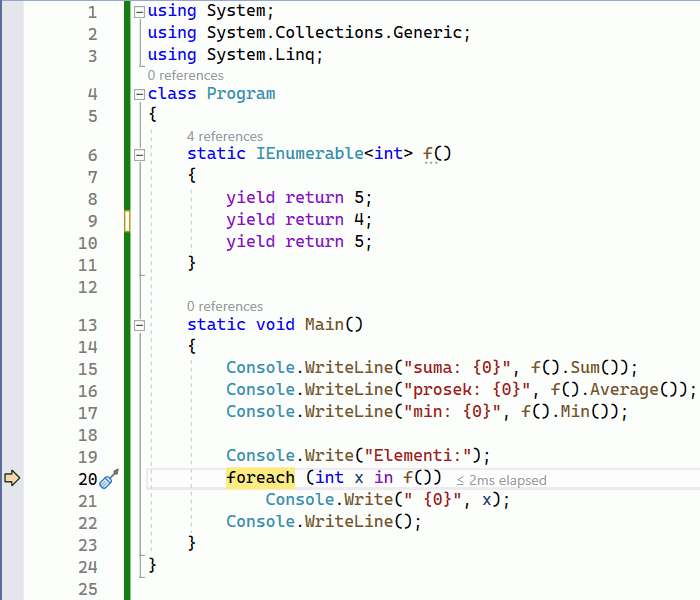
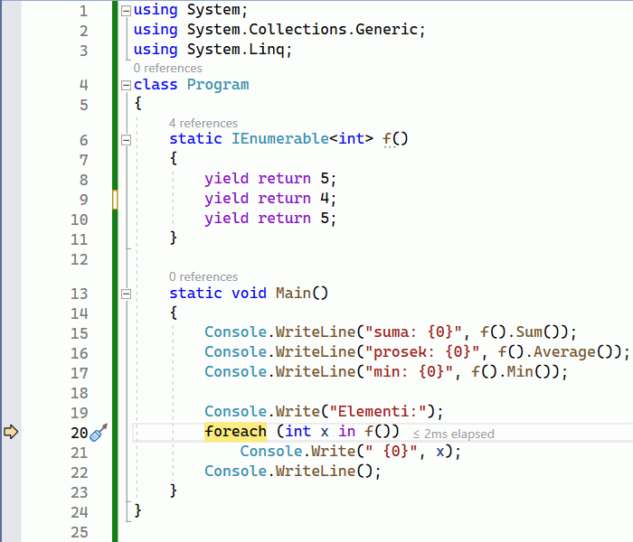

Више о интерфејсу IEnumerable¶
Интерфејс IEnumerable смо већ помињали као апстракцију за различите врсте колекција. Овде ћемо
мало детаљније да се осврнемо на богату подршку овом интерфејсу, како у библиотеци .Net, тако и
у самом језику C#.
Ако се запитамо које су то карактеристичне активности, које обављамо над свим колекцијама, вероватно
ћемо се сетити итерирања кроз колекцију, претраживања (провере да ли колекција садржи одређени
елемент), филтрирања (издвајања елемената са одређеном особином) и слично. Испоставља се да је за
обављање свих ових активности довољно да класа објекта који желимо да користимо као колекцију
имплементира интерфејс IEnumerable. Другим речима, практично све оно што подразумевамо под
апстрактним појмом колекције, садржано је управо у интерфејсу IEnumerable, тј. имплементирање
овог интерфејса је оно што колекције чини колекцијама.

У наставку ћемо видети неколико начина употребе разних врста колекција. Могуће је да су вам неки, или чак сви ти начини употребе познати од раније. Оно што је вероватно ново је чињеница да све ове и сличне поступке можемо да користимо над било којим објектом, који задовољава интерфејс IEnumerable. Ово укључује и објекте које ми креирамо, било као и инстанце наших класа које имплементирају интерфејс IEnumerable, било на неки други начин (примери су на крају ове стране).
Овако богата подршка интерфејсу IEnumerable у језику и библиотеци чини овај интерфејс веома корисном апстракцијом, на коју се вреди навићи.
Итерирање помоћу наредбе foreach¶
Као што знамо, за итерирање кроз различите колекције користи се наредба foreach. Ова наредба
се сматра удобнијом и безбеднијом од наредбе for, јер индексирање није потребно, па се спречава
могућност приступања непостојећем елементу колекције (када је индекс ван граница). Поменули смо да
наредба foreach прихвата било који објекат, чија класа имплементира интерфејс IEnumerable.
Тако, на пример, пошто речници имплементирају интерфејс IEnumerable, можемо да пишемо:
Dictionary<int, int> d = new Dictionary<int, int>();
d[1] = 2; d[3] = 4;
foreach (var item in d)
Console.WriteLine(item);
Раније помињани метод за испис свих елемената колекције можемо да напишемо још мало општије, тако да не користи нужно колекцију целих бројева, него колекцију објеката генеричког типа.
static void Ispis<T>(IEnumerable<T> e)
{
Console.Write("[");
foreach (T x in e)
Console.Write(" {0}", x);
Console.WriteLine(" ]");
}
У том случају, метод Ispis може да се употреби и над речником, листом ниски, или било којом другом
колекцијом.
Dictionary<int, int> d = new Dictionary<int, int>();
d[1] = 2; d[3] = 4;
Ispis(d);
Оно што је мало необично и неочекивано је да петља foreach може да се користи чак и над стековима
и редовима, јер и они имплементирају овај интерфејс, мада одговарајући теоријски апстрактни типови
својом дефиницијом не обухватају могућност итерирања, претраге, филтрирања и друге, већ само приступ
једном елементу (оном на врху стека, односно првом у реду).
Linq методи¶
За класе које имплементирају интерфејс IEnumerable доступан је и велики број метода из именског
простора System.Linq стандардне библиотеке. То су, на пример, методи који враћају неку специфичну
вредност из колекције (First, Last, Min, Max…), методи који враћају резултат неке
агрегатне функције над колекцијом (Any, All, Sum, Count, Average, Contains…),
као и методи-упити, који враћају друге колекције, односно референце на интерфејс IEnumerable
(Reverse, Where, Distinct, Union, Intersect, Except, Select, GroupBy,
Take…). Друге колекције се добијају од постојећих помоћу операција обртања, пресека, уније,
разлике, филтрирањем и другим сличним операцијама.
Следећи програм показује део могућности Linq метода над произвољним колекцијама, тј. објектима
чије класе имплементирају интерфејс IEnumerable. Пошто на месту употребе (метод RazneOperacije)
не морамо да знамо о каквој врсти колекције се ради, ово је такође један вид динамичког полиморфизма.
Програм исписује:
Elementi kolekcije redom: 2 1 5 3 4
Elementi od kraja ka pocetku: 4 3 5 1 2
Samo neparni elementi: 1 5 3
S=15, N=5, avg=3, prvi=2, poslednji=4, min=1, max=5
------------------
Elementi kolekcije redom: 4 3 5 1 2
Elementi od kraja ka pocetku: 2 1 5 3 4
Samo neparni elementi: 3 5 1
S=15, N=5, avg=3, prvi=4, poslednji=2, min=1, max=5
------------------
Elementi kolekcije redom: 1 2 3 4 5
Elementi od kraja ka pocetku: 5 4 3 2 1
Samo neparni elementi: 1 3 5
S=15, N=5, avg=3, prvi=1, poslednji=5, min=1, max=5
------------------
Elementi kolekcije redom: 4 3 5 1 2
Elementi od kraja ka pocetku: 2 1 5 3 4
Samo neparni elementi: 3 5 1
S=15, N=5, avg=3, prvi=4, poslednji=2, min=1, max=5
------------------
Elementi kolekcije redom: 4 3 5 1 2
Elementi od kraja ka pocetku: 2 1 5 3 4
Samo neparni elementi: 3 5 1
S=15, N=5, avg=3, prvi=4, poslednji=2, min=1, max=5
------------------
Пуна контрола над итерирањем¶
Поред итерирања помоћу наредбе foreach, над класама које имплементирају интерфејс IEnumerable
можемо да итерирамо и користећи помоћни објекат, који се назива набрајач или енумератор.
За дату колекцију a, набрајач се генерише позивом метода GetEnumerator над том колекцијом.
IEnumerable<int> kolekcija;
// ... (deo programa u kome se kolekcija inicijalizuje)
IEnumerator<int> nabrajac = kolekcija.GetEnumerator();
Набрајач користимо позивајући његов метод MoveNext() и својство Current. Уколико колекција
има следећи елемент, метод MoveNext() набрајача нас позиционира на тај елемент и враћа логичку
вредност true као обавештење да још нисмо стигли до краја колекције. Након тога, елемент на
који смо се позиционирали можемо да користимо помоћу својства Current нашег набрајача. Када
стигнемо до краја колекције, следећи позив метода MoveNext() враћа логичку вредност false.
На пример, ако је a колекција целих бројева, онда уместо:
foreach (int x in a)
Console.WriteLine(x);
…можемо равноправно да пишемо:
IEnumerator<int> it = a.GetEnumerator();
while (it.MoveNext())
Console.WriteLine(it.Current);
Наравно, метод it.MoveNext() не морамо да позивамо баш у услову while петље, већ био где у
коду, што нам и даје већу контролу него када кроз колекцију итерирамо помоћу наредбе foreach.
Можемо, на пример, да прођемо кроз првих неколико елемената колекције, затим прекинемо итерирање и
радимо нешто друго у програму, а касније помоћу нове петље наставимо да итерирамо од места на коме
смо претходно стали, што помоћу наредбе foreach не бисмо могли да изведемо.
Истакнимо да под итерирањем кроз колекцију подразумевамо само кретање од њеног почетка ка крају. Мада нам набрајач омогућава да задржимо пуну контролу над одлуком да ли и када желимо да дохватимо следећи елемент колекције, кроз колекцију и даље можемо да се крећемо само напред, тј. не можемо да се враћамо на претходне елементе дате колекције помоћу датог набрајача.
Погледајмо и пример у коме помоћу набрајача постижемо сложеније итерирање, какво не бисмо могли да
изведемо наредбом foreach. Следећи програм у обичној for петљи кориснику нуди да изабере да ли
жели да добије следећи елемент са почетка или са краја колекције. Петља се извршава онолико пута колико
има елемената у колекцији, тако да ниједан елемент не може да буде дохваћен и са једне и са друге стране.
Излаз из програма заједно са одговорима корисника могао би да изгледа овако.
Sa pocetka ili sa kraja (p/k)? p
1
Sa pocetka ili sa kraja (p/k)? p
2
Sa pocetka ili sa kraja (p/k)? k
5
Sa pocetka ili sa kraja (p/k)? p
3
Sa pocetka ili sa kraja (p/k)? k
4
Методи који генеришу колекције (генератори)¶
Метод који враћа колекцију, тј. референцу на интерфејс IEnumerable, можемо да напишемо на
различите начине. Можемо, на пример, да из метода вратимо листу или неки други објекат чија класа
имплементира интерфејс IEnumerable.
static IEnumerable<int> f()
{
List<int> a = new List<int> { 5, 4, 5 };
return a;
}
Овде ће бити речи о једном новом начину добијања колекција, а то је њихово генерисање. Приликом генерисања колекције сваки елемент се формира (израчунава, добавља, или на неки други начин ствара) тек онда када га корисник колекције затражи. На тај начин избегава се потреба да се у ма ком тренутку сви елементи колекције чувају истовремено, било у методу који их производи, било у коду који користи колекцију. То значи да употребом метода који генеришу колекције (уместо да их чувају) долази до уштеде меморије, која може да буде значајна у случају да је генерисана колекција веома дугачка. Такође, у случају да на неку полазну колекцију примењујемо дужи ланац трансформација, имплементација сваке трансформације у облику генератора (који не садржи колекцију) може да доведе до значајних уштеда меморије.
Друга предност употребе метода који генеришу колекције је одзивност. У случају да је за израчунавање сваког елемента колекције потребно незанемарљиво време (на пример, десетинка секунде), при интерактивном раду може да буде згодно да се већ генерисани елементи користе одмах по формирању, не чекајући да се израчуна цела колекција. Ако колекција има нпр. хиљаду елемената, корисник би на комплетну колекцију чекао 100 секунди, док од метода који генерише ту колекцију може да добије нпр. првих десет елемената практично одмах (тј. за једну секунду), а да остали елементи пристижу у малим количинама на захтев, брзином којом их корисник употребљава (конзумира), тако да корисник током рада нема осећај да је чекао на податке.
Напоменимо да нас, уз ове погодности, употреба метода који генеришу колекције ни у чему не ограничава, тј. ни по чему не заостаје за методима који враћају целе колекције. Када нам је из било ког разлога на месту на коме позивамо метод потребна цела колекција, увек можемо да конвертујемо резултат метода у листу, а затим да користимо ту листу како нам одговара. На пример:
static IEnumerable<int> f()
{
...
}
List<int> a = f().ToList();
У наставку ћемо објаснити како се пишу методи који генеришу колекције, а успут ћемо видети неке примене таквих метода.
Наредба yield return¶
Извршавањем наредбе yield return метод враћа само један елемент колекције, а уједно враћа и
контролу тока на место у програму са ког је позван. При томе оквир стека (stack frame) овог метода
остаје сачуван, заједно са вредностима свих локалних променљивих и тачним местом у методу на коме
је извршавање привремено прекинуто. Када се даљим извршавањем програма захтева следећи елемент
колекције, метод наставља да се извршава тачно од места на коме се зауставио, тј. од последње
извршене наредбе yield return, потпуно исто као да није ни прекидан. Следећи једноставан
програм може да помогне у разумевању начина на који ради наредба yield return.
Видимо да над резултатом метода f() можемо, као над сваком колекцијом, да извршавамо методе из
именског простора System.Linq, као што су f().Sum(), f().Average(), f().Min() и многи
други. Такође, метод f() може да се користи у наредби foreach за итерирање кроз генерисану
колекцију.
Чак и без потпуног разумевања програма, односно метода f, може да се претпостави да резултат
рада изгледа овако:
suma: 14
prosek: 4.666666666666667
min: 4
Elementi: 5 4 5
Ипак, да би наредни, сложенији примери били сасвим јасни, задржаћемо се овде још мало на разумевању
семантике наредбе yield return.
Приликом извршавања сваког од наведених
Linqметода, методf()се извршава од почетка до краја, тј. пролази се кроз све елементе колекције коју он генерише, односно кроз све његовеyield returnнаредбе.На крају, при извршавању наредбе
foreach, методf()се извршава по четврти пут, али сада са прекидима и наставцима, као што је на почетку описано.
Извршавањем програма по корацима, као приликом дебаговања, може детаљно да се испрати редослед
извршавања наредби, који је приказан и у следећој галерији. Прегледањем слајдова у галерији може
да се запази заустављање извршавања метода f() код сваке наредбе yield return и враћање
на место позива, а затим наставак извршавања метода f() од места где је претходно заустављен.
 



Приметимо да ни на једном месту у претходном програму ни у ком тренутку није чувана цела колекција.
Општији случај генерисања колекције¶
У програму који смо видели, метод f који генерише колекцију можда није довољно добар представник
општег случаја, зато што нема наредби гранања, а нарочито зато што нема петљи. Можемо да се запитамо
шта би се догодило када бисмо наредбу yield return написали у петљи. Сада ћемо видети да се и
при таквој употреби наредбе yield return извршавање метода наставља са пуним памћењем контекста
у коме је метод прекинут. Другим речима, чак и метод који је прекинут усред петље, касније наставља
са радом као да није прекидан, потпуно исто као наш први метод f. Ову чињеницу можете додатно да
потврдите извршавањем следећег програма корак по корак и посматрањем вредности променљивих и редоследа
извршавања наредби, слично као што смо то учинили за претходни програм.

Написати метод који генерише факторијеле природних бројева мање или једнаке задатом броју.
Написати и програм који илуструје рад метода тако што исписује све факторијеле мање од 10000.
Решење је сасвим једноставно – метод у петљи израчунава и враћа бројеве један по један.
Програм исписује
1 2 6 24 120 720 5040
Из овог примера се види и то да методи који генеришу колекције могу, као и сви други методи, да имају параметре.